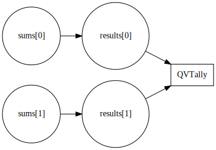

C-13 E2E Circuit Documentation
This guide describes the end-to-end circuit architecture. It includes constraint graphs generated from the Circom sources, an overview of the witness inputs and the Groth16 trusted setup steps.
Constraint Graph
The circomgraph tool can export a visual representation of each R1CS
file. After compiling the circuits run:
npx -y circom2 circuits/qv/qv_tally.circom --r1cs
npx -y circomgraph artifacts/qv_tally/qv_tally.r1cs -o docs/assets/qv_tally.svg
The resulting SVG can be referenced directly in the docs:

Circuit Inputs
The QVTally example circuit accepts vote sums and their square roots.
The prover supplies both arrays as private inputs and receives a single
public output confirming all checks passed.
| Signal | Description |
|---|---|
sums[0..n] |
Vote totals for each option |
results[0..n] |
Square roots proving validity of the sums |
ok |
Output flag set to 1 when constraints are satisfied |
Trusted Setup Workflow
The repository uses Groth16 proving. The high level process is:
- Compile all circuits to R1CS and WASM using
npx -y circom2. - Generate a Powers of Tau ceremony:
bash snarkjs powersoftau new bn128 14 pot14_0000.ptau snarkjs powersoftau contribute pot14_0000.ptau pot14_0001.ptau --name "first" snarkjs powersoftau prepare phase2 pot14_0001.ptau pot14_final.ptau - Produce the initial zkey for each circuit:
bash snarkjs groth16 setup artifacts/qv_tally/qv_tally.r1cs pot14_final.ptau artifacts/qv_tally/zkey_0.zkey - Contribute additional randomness with
snarkjs zkey contributeand verify the final zkey. - Export Solidity verifiers and store all artifacts under
artifacts/.
Publishing with MkDocs
MkDocs builds the documentation site via mkdocs build. During CI the
site is published to GitHub Pages from the gh-pages branch. Run
mkdocs serve locally to preview the pages.